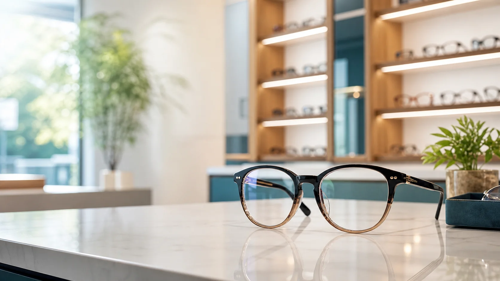
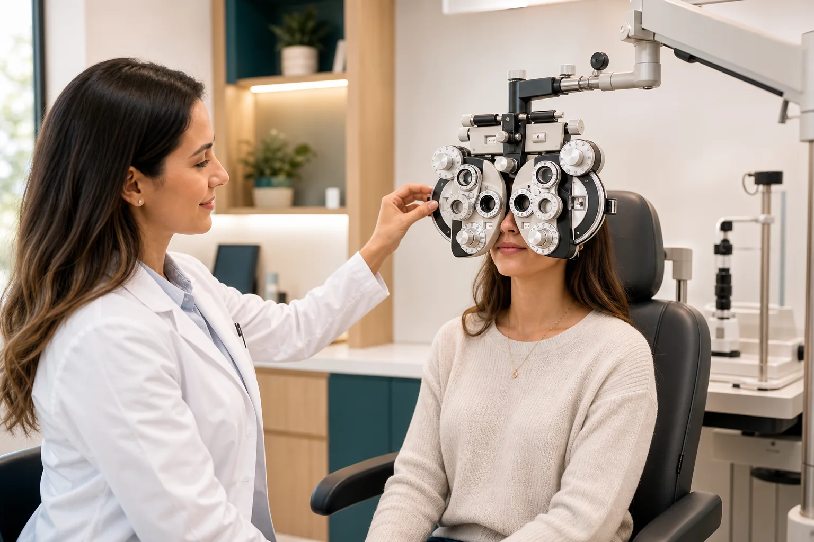

Medida visual clara
Entiendes qué cambió en tu visión y cuándo un lente realmente ayuda.

Lentes pensados para tu día a día.
Examen visual y lentes oftálmicos con asesoría clara en Cumbayá. Elegimos por graduación, comodidad y uso diario.
Enfoque tu-marca
Antes de recomendar un lente, entendemos cómo trabajas, conduces, lees y usas pantallas. No todo cansancio visual se resuelve con más aumento: importa distancia, material, filtro y ajuste.
Lo que cambia la experiencia
Menos vueltas, más criterio para elegir lentes, montura y tratamiento sin comprar a ciegas.
Entiendes qué cambió en tu visión y cuándo un lente realmente ayuda.
Elegimos por puente, varilla, peso, rostro y tipo de lente, no solo por color.
Precios desde el inicio, materiales comparables y recomendación sin presión.
Atención por cita y ubicación práctica para Cumbayá, Quito y Tumbaco.

Examen visual
Servicio en acción
Quien interpreta tu medida visual también revisa puente, peso y altura para evitar deslizamientos, presión y lentes innecesariamente gruesos.
Ver servicios y precios desdeCatálogo demo
Valores referenciales para Ecuador. El precio final depende de graduación, material y disponibilidad.
Revisión de agudeza visual, enfoque y comodidad binocular. Desde $25.00.
Monofocales, progresivos, antirreflejo y filtro azul según tu uso. Desde $65.00.
Armazones livianos, resistentes y proporcionados para tu rostro. Desde $48.00.
Adaptación, prueba de comodidad y guía de higiene para primer uso. Desde $39.00.
Nariceras, varillas, tornillos, alineación y limpieza profesional. Desde $8.00.
Protección UV400, lentes polarizados y opción con medida. Desde $35.00.
Incluye historia visual, revisión de agudeza, refracción, prueba de comodidad y guía de lente.
No todos los antirreflejos, progresivos o filtros sirven para lo mismo. Elegimos según trabajo, pantalla, lectura y movilidad.
Probamos puente, ancho, varilla, peso y compatibilidad con tu graduación para evitar presión, deslizamiento o lentes demasiado gruesos.
Evaluamos si el lente de contacto te conviene, revisamos comodidad y enseñamos colocación, retiro y cuidado.
Un lente bien graduado puede cansar si la montura no apoya correctamente. Ajustamos y revisamos detalles de uso.
Revisamos UV400, polarizado y opción con medida para conducir, caminar o estar al aire libre en Quito.
Prueba social
Testimonios ilustrativos del tipo de atención que ayuda a comprar con más criterio.
"Me explicaron por qué mis lentes anteriores me cansaban frente al computador. La diferencia se notó el primer día."
"No sentí que me vendieran lo más caro; me dieron tres opciones claras y elegí con confianza."
"La montura quedó ajustada a mi rostro. Pequeño detalle, enorme comodidad."
Contacto y ubicación
Preguntas frecuentes
Una vez al año, o antes si notas dolor de cabeza, visión borrosa, fatiga visual o cambios al conducir y leer.
Sí. Los revisamos, comparamos tus medidas actuales y explicamos si conviene mantenerlos o actualizar graduación.
Depende del tipo de lente y tratamiento. En la demo manejamos un rango orientativo de 2 a 5 días laborables.
Sí. Incluimos adaptación, prueba de comodidad y guía de higiene para que puedas usarlos con seguridad.
Esta es una landing demo: WhatsApp y redes apuntan a los dominios oficiales de cada plataforma, no a perfiles ni números reales.